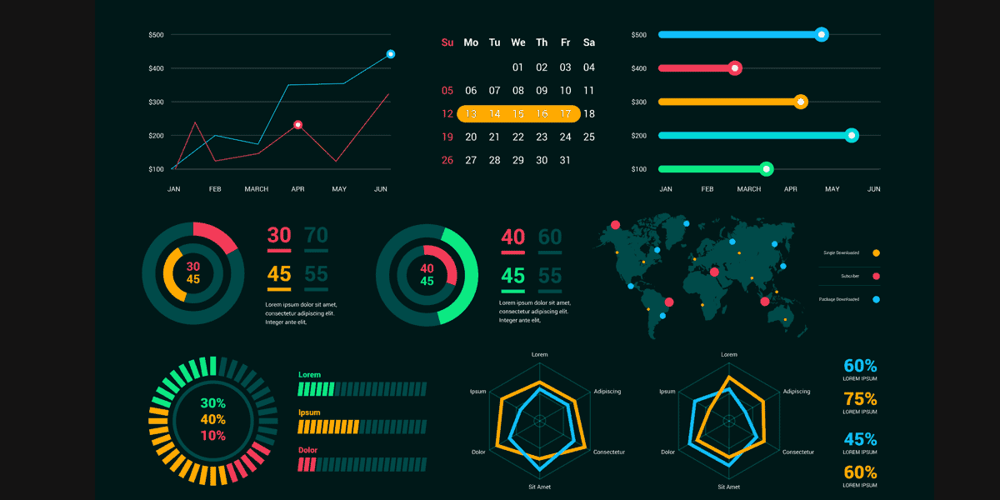

I believe data is more than just numbers — it's the foundation for smarter decisions, better strategies, and stronger businesses. I am driven by a simple idea: the right insights, at the right time, can create real, lasting impact.
In every project, I focus on clarity, precision, and purpose. It is not just about analyzing data — it is about understanding the bigger picture, uncovering meaningful patterns, and turning information into action.
I enjoy working on challenges that push thinking forward and collaborating with teams that value curiosity, creativity, and results.
If you are passionate about growth, innovation, and making decisions that matter, I would love to connect.

I am a Data Analyst II at Loeb Elecric, specializing in building robust data infrastructures using SQL and Power BI. With a degree in Engineering Physics from The Ohio State University, I began my career as an Associate Analyst at AML RightSource and concurrently served as Signal Processing Engineer at Serva Energy
At Loeb Electric, I've executed profitability analysis, that lead to implementing new pricing guidelines, and automated reporting, saving the company hours of manual work. Additionally, I collaborated on a data-driven warehouse management system and maintained data quality in the ERP system. Beyond my role, I conduct weekly training sessions on Excel and Power Query for all employees. In my prior role at Serva Energy, I optimized signal processing algorithms for noise reduction and implemented advanced techniques for improving spectral data.
For further details, please feel free to email me for my resume or any inquiries. My expertise lies in Data Analysis and Signal Processing, and I leverage a strong background in Math and Statistics for impactful contributions to data analytics projects.
B.Sc - Engineering Physics
The Ohio State University
Data Analyst II at Loeb Electric
Signal Processing Engineer at Serva Energy
Associate Analyst at AML RightSource
Undergraduate Research Assistant at The Ohio State University
Relevant Courses: Database Management System, Python, Data Science, Big Data, Web Mining and Data Extraction, Advanced Data Science
Relevant Courses: Object Oriented Programming, Mathematics, Big Data, SQL, Python
At OSU:
Online Courses:
This report provides insights into warehouse utilization metrics. You can explore the data and interact with the visualizations below: